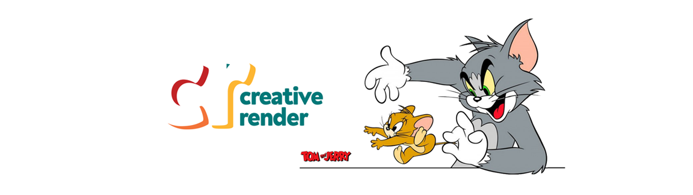

Sim, porquê percebo que muitas vezes, nesta área, o que muito fazemos é unir ideias, e diferente de um tipógrafo ou um desenhista digital, que criam do zero, dificilmente começamos assim. Porém isso não significa que não criamos nada, porquê no processo criativo já temos em mente "onde queremos chegar", e em muitos casos, apenas unir recursos não é suficiente para a obtenção deste resultado, e aí precisamos partir para as edições, e estas, precisam ser autorais.
O processo de "renderização" não é muito diferente disso. Por mais que, muitas vezes, ao modelarmos um projeto de uma casa, por exemplo, façamos todo o desenho das estruturas do zero (por serem únicas à cada projeto), sempre utilizamos "blocos" de modelos 3D prontos, para agilizar o trabalho. E no fim, quando "renderizamos" o projeto temos uma imagem fotorrealista, que é exatamente aquilo que esperávamos ver.
Ah, o Tom e o Jerry é só porquê curto muito animações (principalmente desenhos animados), tanto que busquei ter no logo cores que me lembrassem deles.
Se você clicar em ver galeria vai conhecer algumas variações de uso das cores do logo e alguns wallpapers que criei (utilizando imagens da internet). E em pack de wallpapers deixo disponível para download todas as imagens da galeria!
O processo de desenvolvimento "artístico digital" (se é que esse termo existe), para mim, sempre se deu em 3 etapas:
- Pesquisa e obtenção de recursos (imagens, fontes, ícones, vetores);
- Edição e manipulação desses recursos;
- Arte final.
"Pô, mas então você não cria nada!"
Sim e não.Sim, porquê percebo que muitas vezes, nesta área, o que muito fazemos é unir ideias, e diferente de um tipógrafo ou um desenhista digital, que criam do zero, dificilmente começamos assim. Porém isso não significa que não criamos nada, porquê no processo criativo já temos em mente "onde queremos chegar", e em muitos casos, apenas unir recursos não é suficiente para a obtenção deste resultado, e aí precisamos partir para as edições, e estas, precisam ser autorais.
O processo de "renderização" não é muito diferente disso. Por mais que, muitas vezes, ao modelarmos um projeto de uma casa, por exemplo, façamos todo o desenho das estruturas do zero (por serem únicas à cada projeto), sempre utilizamos "blocos" de modelos 3D prontos, para agilizar o trabalho. E no fim, quando "renderizamos" o projeto temos uma imagem fotorrealista, que é exatamente aquilo que esperávamos ver.
Renderizar: Tornar permanente um trabalho de processamento digital (áudio, imagem, modelos 3D) que, após as alterações editadas, resulta num arquivo final; compilar.Concluindo, cheguei ao nome Creativer Render, que traduzindo ao "pé da letra" seria "Renderização Criativa", como definição do que para mim seria o design gráfico: externalizar uma ideia criativa, ter em uma imagem o que já estava dentro da nossa mente.
Fonte: dicio.com.br (editado).
Ah, o Tom e o Jerry é só porquê curto muito animações (principalmente desenhos animados), tanto que busquei ter no logo cores que me lembrassem deles.
Se você clicar em ver galeria vai conhecer algumas variações de uso das cores do logo e alguns wallpapers que criei (utilizando imagens da internet). E em pack de wallpapers deixo disponível para download todas as imagens da galeria!